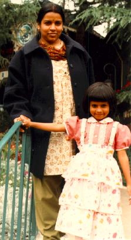

My Days in Vanivihar

When I joined Vanivihar, it was very hard time for me. There was no place in hostel to stay. The senior girls, whose exams were still not finished had to stay another 4-5 months. By help of one of my senior from Sailabala college, I found one senior girl who agreed to sign me as her guest. The formalities were over and I stayed as her guest in her room. The room was very small. She had another guest too in her room. However, she had a best friend who had occupied one single room. So, apa X was spending most of her time with her. Time passed like this. We did not have any place to take bath. Since the water supply was for a very limited time, during which the senior girls had to take bath; store water for the afternoon and so on and so forth. For us we had to go to the garden. There was a pipe there to water the plants in the garden. All the first year postgraduate students found that as an oasis in the desert. It was the only source for us to get some water. However, there were some girls from Balasore, who always were in the line from the beginning. As soon as they get up in the morning, they go there, chat with each other and they will be in the line ahead of us. It was a very terrible experience. A memorable event happened just after a few days of my joining the hostel. It happened during winter. My father had sent some money for Prathamastami. I was very happy and already planned to go to the market next day to buy new cloth for me. However, on that night, when I opened my box, the money was gone. I was stunned. I could not believe that this could happen. But it had happened. The other first year student then suggested me that apa X might have taken the money. She told me many things about apa X; that apa X has a boy friend, and that boyfriend is actually her uncle. Then how apa X has not paid her hostel bills for so many months and how the hostel manager has given her notice to leave the hostel if she does not pay the bills within one month etc. Finally she suggested, we should look through all the storing places of apa X. So, then we started searching all around the room, not leaving a single cornor. When apa X returned her anger reached to her extreme. She was the boss as you can imagine. She had very kindly accepted us as her guests and given place to stay. So, she became very angry, as angry as you can imagine. She scolded us so much, and then finally told us to stay somewhere else since we have doubts about her (suspected her). So what can we do? We were desperate. Alright, we than found a place in the dormitory. Thirty six first year students were staying there. It was no larger than a big class room or a hotel conference room. But still we adjusted there. Apa X also forgot to pay back my 300 rupees which she borrowed from me. I was really feeling bad about the whole situation. The day she had accepted me as her guest, I had promised myself to be obliged to her and to do anything she asked. It was a kind of immotion. But things happened differently and I was in a critical situation. Once I dared to ask her about my money. She remembered, but reduced the amount to 100 rupees; and promised me to pay 50 rupees the next day and the other fifty rupees after a month. Anyway, she paid me fifty rupees the next day, but did not pay the other fifty rupees the next month. Time passed and so did my days in Vanivihar. There were also many good memories, There was a day of celebration by my friends when I broke the record in part one examination. Also there was a time when I got literary champion award. There were also many fun filled events when I used to go with my friends to read poems in gatherings like "Bisuba Milana" and "Patha Prantara Kabita Patha" etc. There are also many mixed memories which I am not describing, since it will be mostly criticism about the behaviour of boys towards girls in the class, like throwing the chalks, writing different names in the blackboard and also giving many absurd remarks. Although that type of behaviour had created confusion between some classmates and myself; I am happy that at the end we all were very good friends. I should end here. Whatever it is, it's a part of my life and it's unforgettable.--
Your comments are always welcome...

My daughter Bagmi and I

http://www.cs.columbia.edu/~deba/people/
This Page Has Been Accessed Times Since
was last updated on :